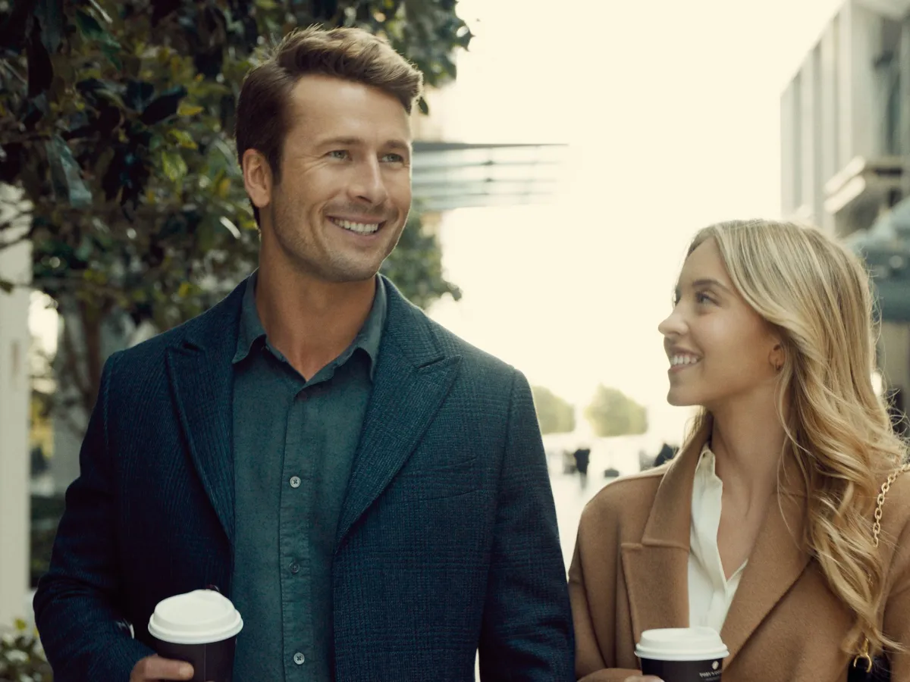
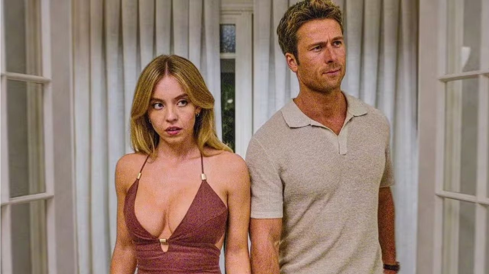
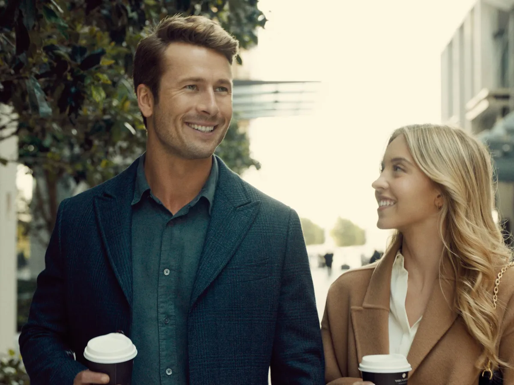
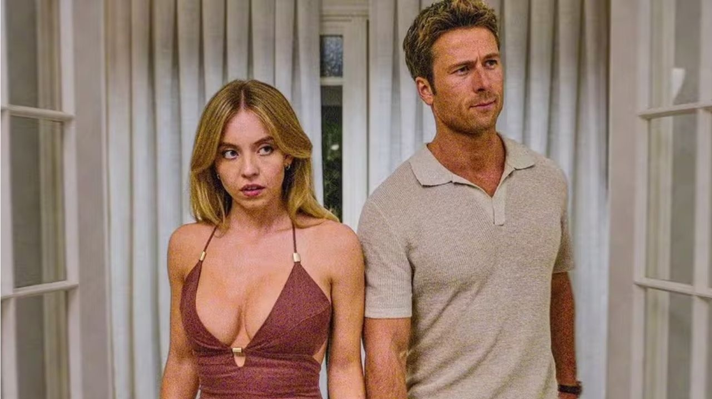

Trailer
Sinopse
Bea (Sydney Sweeney) e Ben (Glen Powell) parecem o casal perfeito, mas depois de um primeiro encontro incrível, algo acontece que transforma sua atração ardente em gelo — até que eles se reencontram inesperadamente em um casamento na Austrália. Forçados a conviver, e para o bem da festa e de seus próprios interesses, eles decidem fingir que são um casal. O que começa como uma farsa logo se transforma em algo mais, enquanto eles navegam por situações cômicas e românticas.
Elenco
Imagens
 


